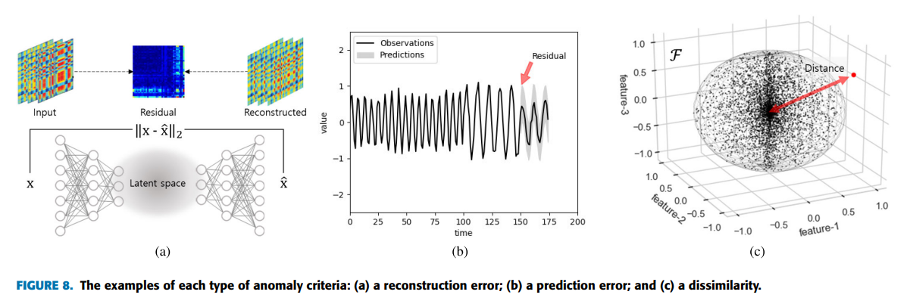

딥러닝을 이용한 이상 탐지
Deep learning for Anomaly Detection
이상탐지(Anomaly Detection)는 데이터에서 정상적인 패턴과 크게 벗어난 비정상적인 패턴을 식별하는 과정이다.
금융 사기 탐지, 네트워크 보안 침해 탐지, 의료 데이터 분석, 제조 공정에서의 결함 감지 등에 사용된다.
이상(anomaly)의 종류
- Point Anomaly: 개별 데이터 포인트가 나머지 데이터와 크게 다른 경우
- Contextual Anomaly: 특정 맥락에서만 비정상으로 간주되는 데이터 포인트. 여기서 맥락은 시간, 장소 등과 같은 추가 정보를 포함
- Collective Anomaly: 개별적으로는 정상으로 보일 수 있지만, 집합적으로 볼 때 비정상인 데이터 포인트들의 그룹을 의미
이상탐지의 기존 방법
이상탐지 방법의 종류
Time/Frequency Domain Analysis
Fourier 분석을 사용하여 시계열 데이터를 frequency 성분으로 변환함으로써 Discrete Fourier Transform(DFT) 및 Fast Fourier Transform(FFT) 기술을 통해 주기적인 동작을 식별할 수 있다. 이러한 방법은 frequency 스펙트럼을 분석하여 계절적 패턴을 식별하는 데 도움이 된다.
Statistical Model
통계 측정값(평균, 분산, 중앙값 등)을 활용하여 새로운 데이터 포인트를 검사하고 정규성을 결정하는 데 도움이 되는 모델을 생성한다.
Distance-Based Model
유클리드 거리 및 DTW(Distance Time Warping, 동적 시간 워핑)와 같은 측정항목을 사용하여 시퀀스 간 유사성을 측정한다. 예를 들어, DTW는 시퀀스 간의 최적 정렬을 계산하여 위상(phase)이 다르더라도 유사성을 식별한다.
DTW는 국지적으로(locally) 위상이 다를 수 있는 두 시퀀스 간의 비선형 정렬을 허용하는 거리 측정 방법이다. 모양이 비슷하지만 시간적으로 잘못 정렬될 수 있는 시퀀스에 특히 유용하다.
<참고> 4.2. 동적 시간 워핑 (DTW)
Predictive Model
예측 모델은 과거 및 현재 데이터를 기반으로 미래 값을 예측하고 예측 값과 실제 관측 값을 비교하여 이상 현상을 감지한다. 이때, 불일치는 이상(anomaly)을 나타낸다. 가장 일반적으로 사용되는 모델은 ARIMA이다. 또한 다변량에 대해서는 VAR, ARIMAX 등을 사용한다.
<참고> 시계열 - 선형 모형
Clustering Model
클러스터링 모델은 유사성을 기준으로 시계열 데이터를 클러스터로 그룹화하여 어떤 클러스터에도 잘 맞지 않는 데이터 포인트로 이상 현상을 식별한다.
클러스터링 알고리즘으로는 k-Means, OCSVM, GMM(Gaussian Mixture Model), DBSCAN 등이 있다. Large-scale data에 대해서는 SCAN(Structural Clustering Algorithm for Networks), MapReduce 등을 사용한다.
기존 방식의 한계점
레이블 부족
레이블이 지정된 훈련 데이터가 부족하고 수집 비용이 많이 들 수 있다. 정상 데이터와 비정상 데이터 사이의 불균형은 효과적인 모델 훈련을 방해한다.
데이터의 복잡성
시스템이 더욱 복잡해짐에 따라 개별 단변량 시계열 데이터를 모니터링하는 것은 비현실적이다. 고차원 데이터는 ’차원의 저주’로 인해 성능 저하를 유발한다. 단명확하지 않은 단변량 분석에서의 변수 간 상관관계는 이상 징후를 탐지하는 데 치명적이다.
이상탐지의 딥러닝 방법
준지도(semi-supervised)/비지도(unsupervised) 학습: 모든 데이터는 준지도의 경우 normal class로 간주된다. 비지도에서는 정상 클래스와 비정상 클래스 사이가 명시적으로 구분되지 않는다. 두 전략 모두 레이블이 지정된 데이터의 부족을 극복하기 위해 데이터 구조를 학습한다.
변수 간 상관관계 (inter-correlation)
다변량 시계열 데이터에 대한 대부분의 딥러닝 모델은 모든 타임스텝에서 여러 변수 간의 관계를 설정한다. 이러한 시공간 정보는 시간적 맥락뿐만 아니라 변수 간의 상관관계도 고려한다.
차원 축소
대규모(large-scale) 시스템 상태는 몇 가지 중요한 요소를 사용하여 표현될 수 있으며, 계산 복잡성을 감소시킬 수 있다. PCA(주성분 분석) 및 SVD(특이값 분해)와 같은 기술이나 AE(자동 인코더, Auto-encoder) 및 VAE(변형 자동 인코더, Variational AE)와 같은 신경망 기반 방법이 일반적으로 사용된다. 그러나 차원 축소로 인해 이상 현상의 원인을 탐지하기는 어려울 수 있다.
2D 행렬
2D 행렬은 다변량 변수를 함께 고려하여 변수 간의 형태학적 유사성과 상대적 규모를 포착한다. 이 방법은 특정 점의 turbulence에 강력하며 데이터의 위상 변화 또는 개념 변화로 인한 이상 현상을 감지할 수 있다.
그래프 기반
그래프 기반 접근 방식은 명시적인 위상(topological) 구조를 정의하고 변수 간의 인과 관계를 학습한다. 어텐션 메커니즘을 갖춘 그래프 신경망(GNN)과 같은 기술은 근본 원인을 식별하는 성능을 향상시키는 데 사용된다. 방향 그래프 \(G=(V,E)\)는 노드 \(V\)와 엣지 \(E\)로 구성되며, 여기서 attention 레이어는 관계를 기반으로 각 노드에 대한 특징 표현을 출력한다.
시간적 맥락 모델링 (temporal context)
시퀀스에는 움직임에 대한 많은 지식이 포함되어 있으며 향후 변화를 암시할 수 있다. 따라서 분포만을 추정하는 것만으로는 맥락 및 집합적 이상을 탐지하는 데 한계가 있다. 시계열에서는 정상 상태를 모델링할 때 시간적 맥락(temporal context)을 고려해야 한다.
RNN(Recurrent Neural Networks)
RNN은 시계열 데이터의 시간적 종속성을 포착하는 데 널리 사용된다. 패턴 시퀀스를 기반으로 예상 값을 예측하고 예측 값과 실제 값을 비교하여 이상을 감지한다. LSTM 및 GRU와 같은 변형은 그래디언트 소실 문제를 해결하고 어떤 과거 상태를 유지하거나 삭제할지 결정하는 메커니즘을 통해 장기적인 종속성을 학습한다.
CNN(Convolutional Neural Networks)
CNN은 일반적으로 이미지 데이터에 사용되지만 분할된 데이터에서 패턴을 학습하여 단기 시계열 데이터를 분석하는 데 효율성을 보여왔다. TCN(Temporal Convolutional Networks)은 확장된 컨볼루션 및 인과 구조를 통해 시계열 데이터의 장기적인 종속성을 포착하도록 설계된 CNN의 변형으로, 미래에서 과거로 정보가 유출되지 않도록 보장한다.
Hybrid Model
Convolutional LSTM을 사용하여 시퀀스 내의 시공간 정보를 캡처하는 등 시공간 데이터를 처리하기 위해 다양한 기술을 결합한다. 이러한 모델은 향상된 이상 탐지를 위해 공간적 및 시간적 종속성을 모두 활용한다.
Attention Mechanisms
처음에 NLP에서 널리 사용되었던 어텐션 메커니즘은 다양한 입력 가중치에 중요도를 할당하여 장거리 종속성을 캡처하기 위해 시계열 데이터에 맞게 조정되었다. Transformer와 같은 모델은 각 데이터 포인트에 대한 상대적 중요성을 지닌 장거리 종속성을 캡처할 수 있으므로 이상 탐지 능력이 향상된다.
Hierarchical Temporal Memory (HTM)
HTM은 신피질(neocortex)의 구조와 기능을 모방하여 역전파 없이 비지도 방식으로 스트리밍 데이터로부터 패턴을 지속적으로 학습한다. 실시간 이상징후 탐지에 적합하다.
이상 탐지 기준 (criteria)
위에서 다룬 모델은 정의된 목적(손실) 함수를 최소화하여 비지도 또는 반지도 방식으로 주어진 데이터의 표현을 학습한다. 목표값은 모델 아키텍처에 따라 다르며 일반적으로 이상치 여부에 대한 결정 기준(decision criteria)과 관련된다.
일반적으로 진단 결과는 수치로 표현되며 이 지표를 anomaly score라고 부른다. 클수록 상태가 abnormal할 가능성이 높아진다. 구체적으로, 점수가 특정 임계값을 초과하면 해당 데이터 포인트를 이상으로 판단한다. 과거에는 분야 전문가가 이 임계값을 경험적으로 결정했지만 이제는 모델 훈련 결과에 따라 결정된다. 일부 모델은 시간 경과에 따른 데이터 변화에 따라 지속적으로 조정되는 적응형 임계값을 사용한다.
이상치 점수를 도출하는 방식은 재구성 오류, 예측 오류, 비유사성의 세 가지 유형으로 분류할 수 있다.

재구성 오류(Reconstruction error)
Autoencoders (AE), Variational Autoencoders (VAE), Generative Adversarial Networks (GAN), and Transformers는 anomaly score로 재구성 오류를 사용한다.
AE 기반 모델은 인풋 데이터의 피쳐를 추출하여 재구성한다.
VAE 기반 모델은 데이터 분포를 추정하고 그로부터 인풋 데이터와 비슷한 샘플을 생성한다.
GAN 기반 모델은 생성기를 사용하여 인풋 데이터와 유사한 샘플을 명시적으로 생성한다.
최근에는 어텐션 메커니즘으로 구성된 transformer 모델은 예측 오류와 재구성 오류를 모두 사용하는 등 쓰이고 있다.
이러한 모델들은 인풋 데이터와 비슷한 데이터를 재구성하거나 생성하고, 생성된 데이터와 인풋데이터 간의 잔차를 측정하는 방식으로 anomaly를 측정한다.
예측 오류(Prediction error)
예측 모델에서 anomaly score를 도출하는 방법은 두 가지가 있다.
하나는 데이터 포인트가 정상으로 분류될 확률에 기반하여 이진(binary) 레이블을 적용하는 방법이다. 예측 오류는 예상된 레이블이 실제 값과 일치하는지 여부를 나타낸다.
다른 방법은 다음 타임스텝에 대한 예상 값을 예측하는 것이다. 이 경우 예측 오류는 예상 값과 실제 관측 값 간의 잔차이다.
비유사도(Dissimilarity)
비유사도는 축적된 데이터의 분포나 클러스터로부터 특정 값이 얼마나 떨어져 있는지를 측정하여 이상을 감지하는 방법이다. 이러한 유사성 측정 방법에는 유클리드 거리, 민코스키 거리, 코사인 유사도, 마할라노비스 거리 등 다양한 거리 측정법이 사용된다.
Temporal Hierarchical One-Class (THOC) Network에서는 dilated RNN을 이용해 시계열 피쳐를 추출하고, 이를 deep support vector data description과 같은 방법을 통해 클러스터링한다. 피쳐와 클러스터 간 거리를 측정하기 위해 cosine similarity를 사용한다.
TCN-Gaussian Mixture Model (TCN-GMM)은 TCN(temporal convolutional network)를 이용해 피쳐를 추출하고, GMM을 이용해 분포를 모델링한다. 이는 mahalanobis 거리를 사용한다.
Multi-Stage TCN은 예측 오류의 분포를 다변량 Gaussian 분포로 추정하고, 현재 예측 오류와 사전 추정된 오류 분포 간의 Mahalanobis distance를 사용하여 anomaly score를 결정한다.
참고자료
- Choi, Kukjin, et al. “Deep learning for anomaly detection in time-series data: Review, analysis, and guidelines.” IEEE access 9 (2021): 120043-120065.